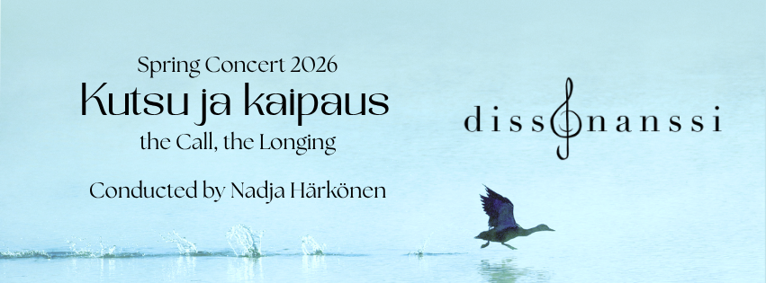

Kevätkonsertti 9.5.2026
Sekakuoro Dissonanssin kevätkonsertti Kutsu ja kaipaus välittää kuulijoilleen musiikin kutsun sekä kaihoisia tunnelmia monipuolisen ohjelmiston kautta. Konsertin pääteos on arvostetun brittisäveltäjä Benjamin Brittenin (1913–1976) Hymn to St. Cecilia, vaikuttava hymni Cecilialle, musiikin suojeluspyhimykselle. Ohjelmistossa on myös useita kansansävelmiä sekä pop-musiikkia. Lisäksi konsertissa kuullaan kantaesityksenä Onni Kallion säveltämä Sateen jälkeinen hiljaisuus. Konsertin nimeen tiivistyy kantava teema: musiikki kutsuu meidät hetkeksi pysähtymään haikeiden ja pakahduttavien tunteiden äärelle.
Dissonanssi on otaniemeläinen sekakuoro, jonka jäsenet ovat pääasiassa Aalto-yliopiston opiskelijoita. Kuoroa johtaa Nadja Härkönen.
Liput: 20€/12€
Aika: 9.5. 18:00
Paikka: Pitäjänmäen kirkko, Turkismiehenkuja 4
Osta lippu
Alennettuun hintaan pääsevät opiskelijat, varus- ja siviilipalvelusta suorittavat, eläkeläiset ja lapset (7–17v.). Alle 7v. lapset pääsevät sisään ilmaiseksi. Henkilökohtaiset avustajat pääsevät samalla lipulla. Alennuslippujen ostajia pyydetään varaamaan soveltuva todistus mukaan.
Dissonanssin konsertit
Dissonanssi järjestää vuodessa kaksi konserttia, yhden kevätlukukaudella ja yhden syyslukukaudella. Näiden lisäksi meidät on mahdollista bongata mm. Art Goes Kapakan Kuorojen kierrokselta sekä AYY:n tapahtumista. Tiedotamme tulevista keikoista Facebookissa.